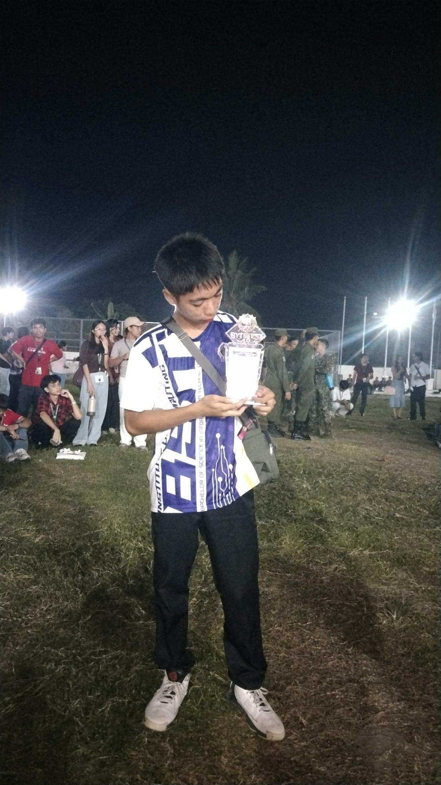

01
Anthony Reguya
BSIT 1B - Asuncion · Institute of Computing

I N T R O D U C T I O N
About My NSTP Journey
I am Anthony Reguya, a Bachelor of Science in Information Technology student under the Institute of Computing at Davao del Norte State College. I discovered that technical skills alone are not enough. It become meaningful when guided by civic awareness and a genuine desire to serve.
This portfolio is more than a requirement. It is a record of how lessons on nationalism, disaster preparedness, environmental care, volunteerism, peace education, and human security reshaped the way I see my role as a young Filipino. As an IT student, I began asking: How can the tools I learn in the classroom help build safer communities, stronger local systems, and a more resilient nation?
The answer continues to unfold. What started as classroom discussions became personal convictions about responsibility, integrity, and the quiet power of consistent service.
M O D U L E S
Reflections on My NSTP Modules
02
Nationalism & Citizenship Training
03
Drug and Substance Abuse Prevention and Control
04
R E F L E C T I O N S
Featured Reflection
Before NSTP, I saw myself as a student of technology. Someone who cared about code, systems and digital solutions. It made me realize that the skills I am learning at the Institute of Computing have meaning when I use them to help people and serve the community.
One lesson that stayed with me is the meaning of national and human security. I used to think of security as just defense and public order.. Through the modules, I learned that security goes beyond that. It includes opportunity, environmental health, disaster readiness, access to accurate information and the well-being of everyday people. The seven elements of security showed me this clearly. A strong nation is built by hands, not just by institutions. It takes all of us.
I thought about my region and the idea became clear. Typhoons, flooding and the problems of passing information in emergencies are real. As an IT student, I saw links from simple community information systems, clearer digital awareness messages, tools that help barangays organize relief or report needs better. Technology does not replace care, but technology can amplify it when guided by civic values.
Helping others without expecting anything makes us better people. You do not need a certificate or a round of applause. Just doing the work is enough. This could mean joining a clean-up in your neighborhood. Tutoring kids who struggle to read. Sitting with a classmate until a hard lesson finally clicks. When you give your time like this, something shifts in you. It shifts in the person you help too. It also gets young people ready for the world. They learn to be the kind of citizens who hold things together of pulling them apart.
Environmental awareness and disaster preparedness further grounded these ideas. Ecological care and risk reduction are not abstract theories. They are daily practices: proper waste disposal, respect for natural resources, and the willingness to prepare families and neighbors before disaster strikes. These habits protect lives and contribute directly to national resilience.
I N S I G H T S
My Key Insights
Citizenship is Practice
Rights are protected when citizens also fulfill responsibilities — obeying laws, caring for the environment, and participating constructively in community life.
Security is Shared Work
National and human security depend on moral integrity, economic solidarity, ecological balance, and the everyday choices of ordinary people.
Service Builds Character
Volunteerism without expectation of reward develops empathy, leadership, and the living tradition of bayanihan.
Preparedness Protects Lives
Understanding hazards and reducing risks at the family and barangay level is one of the most practical forms of patriotism.
Technology Needs Values
IT skills become more powerful when guided by civic purpose — using digital tools to inform, connect, and support communities.
Inclusion Strengthens the Nation
Respect for dignity, gender equality, and diversity allows every Filipino to contribute fully to development and peace.